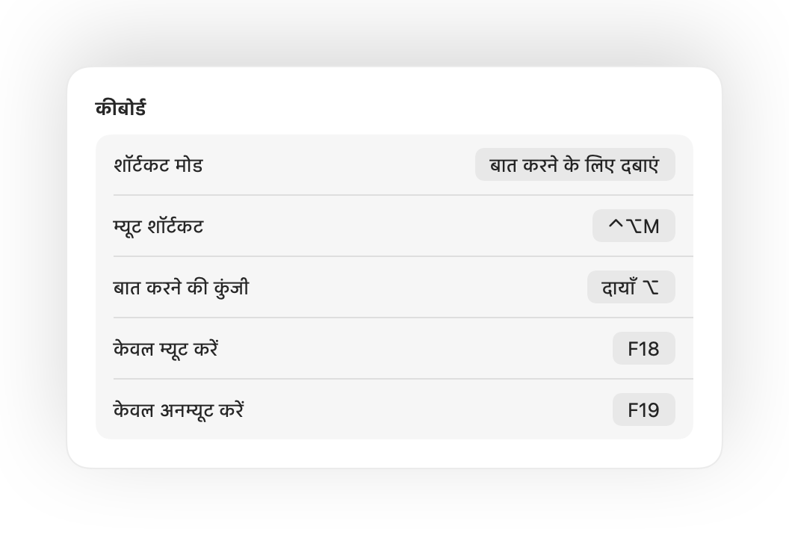

म्यूट करने के लिए अपने AirPods दबाएं
किसी भी कॉल के दौरान, म्यूट करने के लिए स्टेम को एक बार दबाएं और अनम्यूट करने के लिए फिर से दबाएं। यह Chrome में भी काम करता है, जहाँ Google Meet और अन्य वेब कॉल AirPods के दबाव को अनदेखा कर देते हैं।
Mac के लिए Muffle
अपने AirPods या एक कीबोर्ड शॉर्टकट दबाएं। Muffle खुद माइक्रोफ़ोन को बंद कर देता है, ताकि Google Meet, Zoom, Teams, Slack और हर ऐप में सन्नाटा रहे।
3 दिनों के लिए मुफ़्त। फिर एक बार भुगतान, कोई सब्सक्रिप्शन नहीं। macOS 14 Sonoma और बाद के वर्शन के लिए।
बटन पर क्लिक करें, अपने AirPods दबाएं या कोई शॉर्टकट इस्तेमाल करें। Muffle खुद माइक्रोफ़ोन को बंद कर देता है, जिससे हर ऐप को केवल शांति सुनाई देती है।
म्यूट करें, अपना माइक चुनें, इसका लेवल लॉक करें और सीधे मेनू बार से फ़ीचर्स ऑन और ऑफ़ करें।

ज़्यादातर म्यूट बटन केवल एक ऐप को म्यूट करते हैं। Muffle खुद माइक्रोफ़ोन को बंद कर देता है, जिससे आपके Mac के हर ऐप को कोई आवाज़ सुनाई नहीं देती।
किसी भी कॉल के दौरान, म्यूट करने के लिए स्टेम को एक बार दबाएं और अनम्यूट करने के लिए फिर से दबाएं। यह Chrome में भी काम करता है, जहाँ Google Meet और अन्य वेब कॉल AirPods के दबाव को अनदेखा कर देते हैं।
म्यूट रहते हुए बात करना शुरू करें और किसी के भी न सुनने से पहले Muffle आपको बता देता है।

Control-Option-M आपको हर जगह म्यूट करता है, भले ही कॉल बैकग्राउंड टैब में हो। म्यूट रहते हुए बात करने के लिए इसे दबाए रखें, फिर से म्यूट करने के लिए छोड़ दें।
कॉल के दौरान एक छोटा फ़्लोटिंग बटन आपके माइक की स्थिति दिखाता है। म्यूट या अनम्यूट करने के लिए उस पर क्लिक करें।

चुनें कि आपका शॉर्टकट कैसे काम करे: टॉगल करने के लिए टैप करें, बात करने के लिए दबाए रखें, या खाँसते समय म्यूट करने के लिए दबाए रखें। अलग-अलग म्यूट और अनम्यूट कुंजियाँ जोड़ें, या दायाँ ⌥ या अतिरिक्त माउस बटन जैसी कोई एक कुंजी दबाए रखें।

सिर्फ़ एक बात कहने के लिए अनम्यूट किया? अगर आप अपने चुने गए समय तक शांत रहते हैं, तो Muffle आपको फिर से म्यूट कर देता है। केवल आपकी आवाज़ गिनी जाती है, टाइपिंग या बैकग्राउंड का शोर नहीं।
शांत कमरे में AirPods के साथ, Muffle आपके Mac के माइक का सुझाव देता है ताकि AirPods कॉल को पूर्ण गुणवत्ता में चलाएं। जब शोर बढ़ जाता है, तो यह AirPods माइक का सुझाव देता है।

Chrome, Zoom और Teams अपने आप माइक लेवल बदल देते हैं। इसे लॉक करें और Muffle इसे वापस पहले जैसा कर देता है।
हर कॉल म्यूट करके शुरू करें, कॉल खत्म होने पर माइक वापस ऑन करें, और Mac लॉक होने पर म्यूट करें।

अगर कॉल के बीच में हेडसेट डिस्कनेक्ट हो जाता है, तो कॉल Mac के माइक पर जाने और पूरे कमरे की आवाज़ जाने से पहले Muffle म्यूट कर देता है।
शॉर्टकट्स ऐप, Siri, Stream Deck, Raycast या कंट्रोल सेंटर के बटन से म्यूट करें।
स्क्रीन के चारों ओर हरी या लाल चमक, एक रंगीन मेनू बार आइकन, एक फ़्लोटिंग बटन और एक आवाज़ जिसे आप हर माइक के लिए बंद कर सकते हैं। जो आपको पसंद हों, उन्हें ऑन करें।
Muffle कभी भी ऑडियो रिकॉर्ड, स्टोर या सेंड नहीं करता। यह सिर्फ आपके माइक्रोफ़ोन को ऑन और ऑफ करता है और उसकी लाउडनेस पढ़ता है। कोई अकाउंट नहीं, कोई एनालिटिक्स नहीं, कोई ट्रैकिंग नहीं।
Mac App Store से Muffle इंस्टॉल करें और माइक्रोफ़ोन तक पहुँच की अनुमति दें।
हमेशा की तरह किसी भी ऐप में कॉल से जुड़ें।
म्यूट करने के लिए अपने AirPods दबाएं, Control-Option-M दबाएं, या मेनू बार आइकन पर क्लिक करें।
हाँ। Chrome, AirPods के म्यूट दबाव को वेब कॉल तक नहीं भेजता, इसलिए Muffle इसे पकड़ता है और खुद माइक्रोफ़ोन को म्यूट कर देता है। ब्राउज़र टैब की हर कॉल के लिए भी यही लागू होता है।
आपका कॉल ऐप अभी भी आपके माइक को ऑन दिखा सकता है, क्योंकि Muffle ऐप के बटन के बजाय माइक्रोफ़ोन को ही बंद कर देता है। दोनों ही मामलों में लोगों को कोई आवाज़ नहीं जाती। आपके म्यूट रहने के दौरान मेनू बार में Muffle आइकन लाल हो जाता है।
AirPods Pro, AirPods 3 और बाद के वर्शन, और AirPods Max, साथ ही कॉल कंट्रोल वाले Beats मॉडल। कीबोर्ड शॉर्टकट और मेनू बार किसी भी माइक्रोफ़ोन के साथ काम करते हैं।
हाँ। Muffle आपके Mac पर माइक्रोफ़ोन का उपयोग करने वाले हर ऐप के साथ काम करता है, चाहे डेस्कटॉप ऐप हो या ब्राउज़र कॉल।
नहीं। 3 दिनों तक हर सुविधा मुफ़्त में आज़माएं, फिर एक ही बार की खरीदारी में Muffle अनलॉक करें।
macOS, AirPods के दबाव को सिर्फ उन ऐप तक भेजता है जो माइक्रोफ़ोन इस्तेमाल कर रहे हों, इसलिए Muffle कॉल के दौरान एक साइलेंट कनेक्शन खुला रखता है। कुछ भी रिकॉर्ड नहीं होता।
Muffle बंद होने पर आपके माइक्रोफ़ोन को वापस ऑन कर देता है, ताकि आप कभी भी म्यूट न फंसे रहें।
macOS 14 Sonoma और बाद के वर्शन। कंट्रोल सेंटर बटन के लिए macOS 26 या बाद के वर्शन की ज़रूरत है।
हाँ। सेटिंग्स में “बात करने के लिए दबाएं” चुनें और बोलने के लिए अपना शॉर्टकट दबाए रखें। आप दायाँ ⌥ या fn जैसी कोई एक कुंजी, या अतिरिक्त माउस बटन भी दबाए रख सकते हैं।
जब कोई कॉल AirPods माइक का उपयोग करती है, तो AirPods कॉल मोड में स्विच हो जाते हैं, जिससे आवाज़ कम गुणवत्ता में सुनाई देती है। शांत कमरे में Muffle इसके बजाय आपके Mac के माइक का सुझाव देता है, ताकि AirPods पूर्ण गुणवत्ता में बजते रहें।
नहीं। Muffle Apple के ऑन-डिवाइस साउंड विश्लेषण से आवाज़ पहचानता है, इसलिए केवल बोलना ही गिना जाता है। टाइपिंग, क्लिक और बैकग्राउंड का शोर नहीं, और कुछ भी रिकॉर्ड नहीं होता।
हर ऐप में अपने Mac पर माइक्रोफ़ोन म्यूट करने के आसान, व्यावहारिक तरीके।
Muffle 3 दिनों के लिए आज़माने हेतु मुफ़्त है।